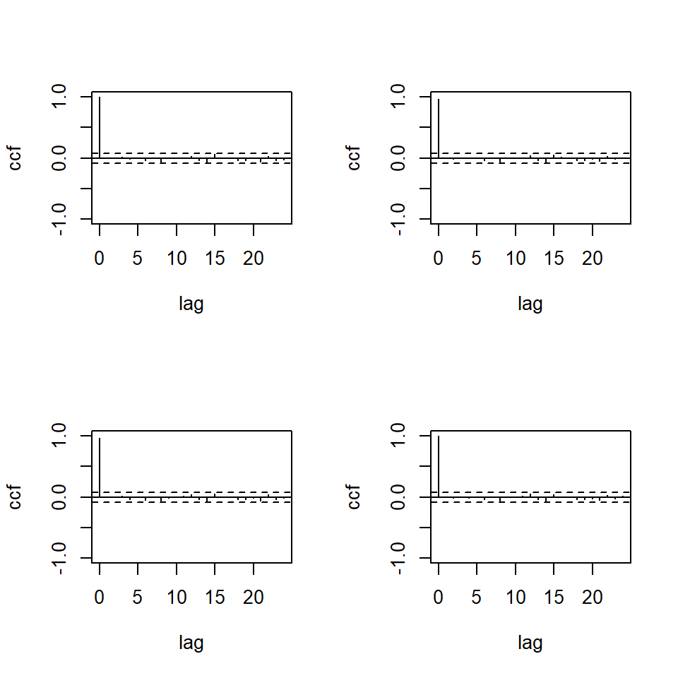

![]()
library(ggplot2)
library(forecast)
library(astsa)
library(tidyverse)
library(MTS)
library(marima)Tema 2: Análisis multivariado de series temporales(1)
1 librerías
2 Producto interno bruto
El producto interno bruto de Reinos Unidos, Canadá y Estados Unidos de segundo trimestre del 1980 al segundo trimestre del 2011.
Los datos son ajustados estacionalmente.
da=read.table("q-gdp-ukcaus.txt",header=T)
tsplot(da[,3:5])
loggdp=log(da[,3:5])
tsplot(loggdp)- Retornos
x=loggdp[2:126,]-loggdp[1:125,]
x=x*100
tsplot(x)
acf(x)2.1 VAR
2.1.1 Empezamos con VAR(1) y VAR(2) usando MTS.
m1=MTS::VAR(x,1)Constant term:
Estimates: 0.1713324 0.1182869 0.2785892
Std.Error: 0.06790162 0.07193106 0.07877173
AR coefficient matrix
AR( 1 )-matrix
[,1] [,2] [,3]
[1,] 0.434 0.189 0.0373
[2,] 0.185 0.245 0.3917
[3,] 0.322 0.182 0.1674
standard error
[,1] [,2] [,3]
[1,] 0.0811 0.0827 0.0872
[2,] 0.0859 0.0877 0.0923
[3,] 0.0940 0.0960 0.1011
Residuals cov-mtx:
[,1] [,2] [,3]
[1,] 0.28933472 0.01965508 0.06619853
[2,] 0.01965508 0.32469319 0.16862723
[3,] 0.06619853 0.16862723 0.38938665
det(SSE) = 0.02721916
AIC = -3.459834
BIC = -3.256196
HQ = -3.377107 m2=MTS::VAR(x,2)Constant term:
Estimates: 0.1258163 0.1231581 0.2895581
Std.Error: 0.07266338 0.07382941 0.0816888
AR coefficient matrix
AR( 1 )-matrix
[,1] [,2] [,3]
[1,] 0.393 0.103 0.0521
[2,] 0.351 0.338 0.4691
[3,] 0.491 0.240 0.2356
standard error
[,1] [,2] [,3]
[1,] 0.0934 0.0984 0.0911
[2,] 0.0949 0.1000 0.0926
[3,] 0.1050 0.1106 0.1024
AR( 2 )-matrix
[,1] [,2] [,3]
[1,] 0.0566 0.106 0.01889
[2,] -0.1914 -0.175 -0.00868
[3,] -0.3120 -0.131 0.08531
standard error
[,1] [,2] [,3]
[1,] 0.0924 0.0876 0.0938
[2,] 0.0939 0.0890 0.0953
[3,] 0.1038 0.0984 0.1055
Residuals cov-mtx:
[,1] [,2] [,3]
[1,] 0.28244420 0.02654091 0.07435286
[2,] 0.02654091 0.29158166 0.13948786
[3,] 0.07435286 0.13948786 0.35696571
det(SSE) = 0.02258974
AIC = -3.502259
BIC = -3.094982
HQ = -3.336804 - Criterios de información.
m3=MTS::VARorder(x,maxp=15)selected order: aic = 2
selected order: bic = 1
selected order: hq = 2
Summary table:
p AIC BIC HQ M(p) p-value
[1,] 0 -3.3539 -3.3539 -3.3539 0.0000 0.0000
[2,] 1 -4.2694 -4.0657 -4.1866 111.7707 0.0000
[3,] 2 -4.3531 -3.9458 -4.1877 23.3444 0.0055
[4,] 3 -4.3094 -3.6985 -4.0612 9.9783 0.3522
[5,] 4 -4.2785 -3.4639 -3.9476 10.9118 0.2818
[6,] 5 -4.1655 -3.1473 -3.7518 2.8963 0.9683
[7,] 6 -4.0750 -2.8531 -3.5786 4.8423 0.8478
[8,] 7 -3.9830 -2.5576 -3.4039 4.5561 0.8712
[9,] 8 -4.1184 -2.4893 -3.4566 23.6080 0.0050
[10,] 9 -4.0474 -2.2146 -3.3028 5.9445 0.7455
[11,] 10 -3.9706 -1.9342 -3.1433 5.2766 0.8096
[12,] 11 -3.9850 -1.7450 -3.0750 11.9593 0.2156
[13,] 12 -4.0317 -1.5881 -3.0390 13.8308 0.1285
[14,] 13 -4.0535 -1.4062 -2.9780 11.5191 0.2418
[15,] 14 -4.1048 -1.2538 -2.9466 12.9867 0.1632
[16,] 15 -4.3520 -1.2974 -3.1111 24.8411 0.00322.1.2 Comparación con el paquete vars
mvars=vars::VAR(x,p=1)
summary(mvars)
VAR Estimation Results:
=========================
Endogenous variables: uk, ca, us
Deterministic variables: const
Sample size: 124
Log Likelihood: -304.407
Roots of the characteristic polynomial:
0.7091 0.08735 0.05004
Call:
vars::VAR(y = x, p = 1)
Estimation results for equation uk:
===================================
uk = uk.l1 + ca.l1 + us.l1 + const
Estimate Std. Error t value Pr(>|t|)
uk.l1 0.43435 0.08106 5.358 4.12e-07 ***
ca.l1 0.18888 0.08275 2.282 0.0242 *
us.l1 0.03727 0.08716 0.428 0.6697
const 0.17133 0.06790 2.523 0.0129 *
---
Signif. codes: 0 '***' 0.001 '**' 0.01 '*' 0.05 '.' 0.1 ' ' 1
Residual standard error: 0.5468 on 120 degrees of freedom
Multiple R-Squared: 0.3687, Adjusted R-squared: 0.3529
F-statistic: 23.36 on 3 and 120 DF, p-value: 5.596e-12
Estimation results for equation ca:
===================================
ca = uk.l1 + ca.l1 + us.l1 + const
Estimate Std. Error t value Pr(>|t|)
uk.l1 0.18499 0.08587 2.154 0.0332 *
ca.l1 0.24475 0.08766 2.792 0.0061 **
us.l1 0.39166 0.09233 4.242 4.38e-05 ***
const 0.11829 0.07193 1.644 0.1027
---
Signif. codes: 0 '***' 0.001 '**' 0.01 '*' 0.05 '.' 0.1 ' ' 1
Residual standard error: 0.5792 on 120 degrees of freedom
Multiple R-Squared: 0.4685, Adjusted R-squared: 0.4552
F-statistic: 35.26 on 3 and 120 DF, p-value: < 2.2e-16
Estimation results for equation us:
===================================
us = uk.l1 + ca.l1 + us.l1 + const
Estimate Std. Error t value Pr(>|t|)
uk.l1 0.32153 0.09404 3.419 0.000859 ***
ca.l1 0.18196 0.09600 1.895 0.060438 .
us.l1 0.16740 0.10111 1.656 0.100410
const 0.27859 0.07877 3.537 0.000577 ***
---
Signif. codes: 0 '***' 0.001 '**' 0.01 '*' 0.05 '.' 0.1 ' ' 1
Residual standard error: 0.6343 on 120 degrees of freedom
Multiple R-Squared: 0.3044, Adjusted R-squared: 0.287
F-statistic: 17.5 on 3 and 120 DF, p-value: 1.725e-09
Covariance matrix of residuals:
uk ca us
uk 0.29898 0.02031 0.06841
ca 0.02031 0.33552 0.17425
us 0.06841 0.17425 0.40237
Correlation matrix of residuals:
uk ca us
uk 1.00000 0.06413 0.1972
ca 0.06413 1.00000 0.4742
us 0.19722 0.47424 1.0000m3=VARorder(x,maxp=15)selected order: aic = 2
selected order: bic = 1
selected order: hq = 2
Summary table:
p AIC BIC HQ M(p) p-value
[1,] 0 -3.3539 -3.3539 -3.3539 0.0000 0.0000
[2,] 1 -4.2694 -4.0657 -4.1866 111.7707 0.0000
[3,] 2 -4.3531 -3.9458 -4.1877 23.3444 0.0055
[4,] 3 -4.3094 -3.6985 -4.0612 9.9783 0.3522
[5,] 4 -4.2785 -3.4639 -3.9476 10.9118 0.2818
[6,] 5 -4.1655 -3.1473 -3.7518 2.8963 0.9683
[7,] 6 -4.0750 -2.8531 -3.5786 4.8423 0.8478
[8,] 7 -3.9830 -2.5576 -3.4039 4.5561 0.8712
[9,] 8 -4.1184 -2.4893 -3.4566 23.6080 0.0050
[10,] 9 -4.0474 -2.2146 -3.3028 5.9445 0.7455
[11,] 10 -3.9706 -1.9342 -3.1433 5.2766 0.8096
[12,] 11 -3.9850 -1.7450 -3.0750 11.9593 0.2156
[13,] 12 -4.0317 -1.5881 -3.0390 13.8308 0.1285
[14,] 13 -4.0535 -1.4062 -2.9780 11.5191 0.2418
[15,] 14 -4.1048 -1.2538 -2.9466 12.9867 0.1632
[16,] 15 -4.3520 -1.2974 -3.1111 24.8411 0.0032CI=data.frame(order=0:15,AIC=m3$aic,BIC=m3$bic,HQ=m3$hq)
CI%>%gather(
key = "C.Info",
value = "value",
AIC,BIC,HQ
) %>% ggplot() +
geom_line( aes(x = order, y = value, group=C.Info,color=C.Info))- Los grados de libertad para VAR(1) son \(pk^2\)
1*3^2 [1] 9mq(m1$residuals,adj=9)Ljung-Box Statistics:
m Q(m) df p-value
[1,] 1.00 9.66 0.00 1.00
[2,] 2.00 17.53 9.00 0.04
[3,] 3.00 26.88 18.00 0.08
[4,] 4.00 45.07 27.00 0.02
[5,] 5.00 52.91 36.00 0.03
[6,] 6.00 58.52 45.00 0.09
[7,] 7.00 66.50 54.00 0.12
[8,] 8.00 81.90 63.00 0.06
[9,] 9.00 92.83 72.00 0.05
[10,] 10.00 103.90 81.00 0.04
[11,] 11.00 107.82 90.00 0.10
[12,] 12.00 119.23 99.00 0.08
[13,] 13.00 132.59 108.00 0.05
[14,] 14.00 142.52 117.00 0.05
[15,] 15.00 153.51 126.00 0.05
[16,] 16.00 158.83 135.00 0.08
[17,] 17.00 165.14 144.00 0.11
[18,] 18.00 171.03 153.00 0.15
[19,] 19.00 184.52 162.00 0.11
[20,] 20.00 193.41 171.00 0.12
[21,] 21.00 198.35 180.00 0.17
[22,] 22.00 206.70 189.00 0.18
[23,] 23.00 211.62 198.00 0.24
[24,] 24.00 223.23 207.00 0.21- Los grados de libertad para VAR(2) son \(pk^2\)
2*3^2[1] 18mq(m2$residuals,adj=18)Ljung-Box Statistics:
m Q(m) df p-value
[1,] 1.000 0.816 -9.000 1.00
[2,] 2.000 3.978 0.000 1.00
[3,] 3.000 16.665 9.000 0.05
[4,] 4.000 35.122 18.000 0.01
[5,] 5.000 38.189 27.000 0.07
[6,] 6.000 41.239 36.000 0.25
[7,] 7.000 47.621 45.000 0.37
[8,] 8.000 61.677 54.000 0.22
[9,] 9.000 67.366 63.000 0.33
[10,] 10.000 76.930 72.000 0.32
[11,] 11.000 81.567 81.000 0.46
[12,] 12.000 93.112 90.000 0.39
[13,] 13.000 105.327 99.000 0.31
[14,] 14.000 116.279 108.000 0.28
[15,] 15.000 128.974 117.000 0.21
[16,] 16.000 134.704 126.000 0.28
[17,] 17.000 138.552 135.000 0.40
[18,] 18.000 146.256 144.000 0.43
[19,] 19.000 162.418 153.000 0.29
[20,] 20.000 171.948 162.000 0.28
[21,] 21.000 174.913 171.000 0.40
[22,] 22.000 182.056 180.000 0.44
[23,] 23.000 190.276 189.000 0.46
[24,] 24.000 202.141 198.000 0.41
MTSdiag(m2,adj=18)[1] "Covariance matrix:"
uk ca us
uk 0.2848 0.0268 0.075
ca 0.0268 0.2940 0.141
us 0.0750 0.1406 0.360
CCM at lag: 0
[,1] [,2] [,3]
[1,] 1.0000 0.0925 0.234
[2,] 0.0925 1.0000 0.432
[3,] 0.2342 0.4324 1.000
Simplified matrix:
CCM at lag: 1
. . .
. . .
. . .
CCM at lag: 2
. . .
. . .
. . .
CCM at lag: 3
. . .
. . .
. . .
CCM at lag: 4
. . -
. . .
. . .
CCM at lag: 5
. . .
. . .
. . .
CCM at lag: 6
. . .
. . .
. . .
CCM at lag: 7
. . .
. . .
. . .
CCM at lag: 8
. . .
. . .
. . .
CCM at lag: 9
. . .
. . .
. . .
CCM at lag: 10
. . .
. . .
. . .
CCM at lag: 11
. . .
. . .
. . .
CCM at lag: 12
. . .
. . .
. . .
CCM at lag: 13
. - .
. . .
. . .
CCM at lag: 14
. - .
. . .
. . .
CCM at lag: 15
. . .
. . .
. . .
CCM at lag: 16
. . .
. . .
. . .
CCM at lag: 17
. . .
. . .
. . .
CCM at lag: 18
. . .
. . .
. . .
CCM at lag: 19
. . .
. . +
. . .
CCM at lag: 20
. . .
. . .
. . .
CCM at lag: 21
. . .
. . .
. . .
CCM at lag: 22
. . .
. . .
. . .
CCM at lag: 23
. . .
. . .
. . .
CCM at lag: 24
. . .
. . .
. . . 
Hit Enter for p-value plot of individual ccm: Hit Enter to compute MQ-statistics:
Ljung-Box Statistics:
m Q(m) df p-value
[1,] 1.000 0.816 -9.000 1.00
[2,] 2.000 3.978 0.000 1.00
[3,] 3.000 16.665 9.000 0.05
[4,] 4.000 35.122 18.000 0.01
[5,] 5.000 38.189 27.000 0.07
[6,] 6.000 41.239 36.000 0.25
[7,] 7.000 47.621 45.000 0.37
[8,] 8.000 61.677 54.000 0.22
[9,] 9.000 67.366 63.000 0.33
[10,] 10.000 76.930 72.000 0.32
[11,] 11.000 81.567 81.000 0.46
[12,] 12.000 93.112 90.000 0.39
[13,] 13.000 105.327 99.000 0.31
[14,] 14.000 116.279 108.000 0.28
[15,] 15.000 128.974 117.000 0.21
[16,] 16.000 134.704 126.000 0.28
[17,] 17.000 138.552 135.000 0.40
[18,] 18.000 146.256 144.000 0.43
[19,] 19.000 162.418 153.000 0.29
[20,] 20.000 171.948 162.000 0.28
[21,] 21.000 174.913 171.000 0.40
[22,] 22.000 182.056 180.000 0.44
[23,] 23.000 190.276 189.000 0.46
[24,] 24.000 202.141 198.000 0.41Hit Enter to obtain residual plots: 3 Retornos en logaritmo (en porcentaje) de un portafolio de CRSP
3.1 VMA
- Retornos en logaritmo (en porcentaje) de un portafolio de CRSP (Center for Research in Security Prices), de enero 1961 a diciembre 2011 (T=612).
- Consiste en stocks de NYSE, AMEX y NASDAQ.
- Se va a estudiar el decil 5 y decil 8 del logretorno.
da=read.table("m-dec15678-6111.txt",header=T)
head(da) date dec1 dec5 dec6 dec7 dec8
1 19610131 0.058011 0.081767 0.084824 0.087414 0.099884
2 19610228 0.029241 0.055524 0.067772 0.079544 0.079434
3 19610330 0.025896 0.041304 0.055696 0.065426 0.069637
4 19610428 0.005667 0.000780 0.005113 0.022786 0.019822
5 19610531 0.019208 0.049590 0.047651 0.031453 0.047365
6 19610630 -0.024670 -0.040046 -0.058176 -0.056580 -0.054167x=log(da[,2:6]+1)*100
rtn=cbind(x$dec5,x$dec8)
tdx=c(1:612)/12+1961
par(mfcol=c(2,1))
plot(tdx,rtn[,1],type='l',xlab='year',ylab='d5')
plot(tdx,rtn[,2],type='l',xlab='year',ylab='d8')ccm(rtn)[1] "Covariance matrix:"
[,1] [,2]
[1,] 30.7 34.3
[2,] 34.3 41.2
CCM at lag: 0
[,1] [,2]
[1,] 1.000 0.964
[2,] 0.964 1.000
Simplified matrix:
CCM at lag: 1
+ +
+ +
CCM at lag: 2
. .
. .
CCM at lag: 3
. .
. .
CCM at lag: 4
. .
. .
CCM at lag: 5
. .
. .
CCM at lag: 6
. .
. .
CCM at lag: 7
. .
. .
CCM at lag: 8
- -
- -
CCM at lag: 9
. .
. .
CCM at lag: 10
. .
. .
CCM at lag: 11
. .
. .
CCM at lag: 12
. .
. . Hit Enter for p-value plot of individual ccm: MTS::VMAorder(rtn,lag=20)Q(j,m) Statistics:
j Q(j,m) p-value
[1,] 1.00 109.72 0.02
[2,] 2.00 71.11 0.64
[3,] 3.00 63.14 0.76
[4,] 4.00 58.90 0.78
[5,] 5.00 55.40 0.77
[6,] 6.00 55.20 0.65
[7,] 7.00 53.70 0.56
[8,] 8.00 53.05 0.43
[9,] 9.00 47.87 0.48
[10,] 10.00 43.80 0.48
[11,] 11.00 43.45 0.33
[12,] 12.00 39.52 0.32
[13,] 13.00 29.53 0.59
[14,] 14.00 25.76 0.59
[15,] 15.00 14.65 0.93
[16,] 16.00 11.55 0.93
[17,] 17.00 10.44 0.84
[18,] 18.00 9.52 0.66
[19,] 19.00 5.23 0.73
[20,] 20.00 3.97 0.41m1=MTS::VMA(rtn,q=1)Number of parameters: 6
initial estimates: 0.8935 0.9465 -0.3709 0.1852 -0.533 0.2658
Par. Lower-bounds: 0.4517 0.4391 -0.6746 -0.079 -0.8818 -0.0376
Par. Upper-bounds: 1.3353 1.4539 -0.0672 0.4493 -0.1843 0.5691
Final Estimates: 0.9202559 0.9838171 -0.4321622 0.2300906 -0.5977665 0.3121535
Coefficient(s):
Estimate Std. Error t value Pr(>|t|)
[1,] 0.9203 0.2596 3.546 0.000392 ***
[2,] 0.9838 0.3027 3.251 0.001151 **
[3,] -0.4322 0.1448 -2.985 0.002837 **
[4,] 0.2301 0.1255 1.833 0.066810 .
[5,] -0.5978 0.1676 -3.567 0.000361 ***
[6,] 0.3122 0.1454 2.146 0.031835 *
---
Signif. codes: 0 '***' 0.001 '**' 0.01 '*' 0.05 '.' 0.1 ' ' 1
---
Estimates in matrix form:
Constant term:
Estimates: 0.9202559 0.9838171
MA coefficient matrix
MA( 1 )-matrix
[,1] [,2]
[1,] -0.432 0.230
[2,] -0.598 0.312
Residuals cov-matrix:
[,1] [,2]
[1,] 29.64753 32.81585
[2,] 32.81585 39.13148
----
aic= 4.44172
bic= 4.485021 m2=MTS::VMA(rtn,q=2)Number of parameters: 10
initial estimates: 0.8959 0.9458 -0.3715 0.1854 -0.0441 0.1132 -0.5355 0.2681 0.0321 0.0451
Par. Lower-bounds: 0.4551 0.4389 -0.6745 -0.0783 -0.3469 -0.1503 -0.884 -0.0351 -0.3161 -0.2579
Par. Upper-bounds: 1.3367 1.4527 -0.0685 0.4491 0.2587 0.3767 -0.1871 0.5713 0.3804 0.3481
Final Estimates: 0.9111029 0.9727181 -0.3909807 0.1994245 -0.003166616 0.06987341 -0.5566988 0.2808989 0.06880401 0.0027429
Coefficient(s):
Estimate Std. Error t value Pr(>|t|)
[1,] 0.911103 0.241042 3.780 0.000157 ***
[2,] 0.972718 0.285405 3.408 0.000654 ***
[3,] -0.390981 0.151062 -2.588 0.009648 **
[4,] 0.199424 0.131483 1.517 0.129336
[5,] -0.003167 0.142909 -0.022 0.982322
[6,] 0.069873 0.123479 0.566 0.571482
[7,] -0.556699 0.174391 -3.192 0.001412 **
[8,] 0.280899 0.151741 1.851 0.064145 .
[9,] 0.068804 0.165529 0.416 0.677658
[10,] 0.002743 0.143014 0.019 0.984698
---
Signif. codes: 0 '***' 0.001 '**' 0.01 '*' 0.05 '.' 0.1 ' ' 1
---
Estimates in matrix form:
Constant term:
Estimates: 0.9111029 0.9727181
MA coefficient matrix
MA( 1 )-matrix
[,1] [,2]
[1,] -0.391 0.199
[2,] -0.557 0.281
MA( 2 )-matrix
[,1] [,2]
[1,] -0.00317 0.06987
[2,] 0.06880 0.00274
Residuals cov-matrix:
[,1] [,2]
[1,] 29.46232 32.66685
[2,] 32.66685 39.00896
----
aic= 4.441487
bic= 4.513656 m1$bic[1] 4.485021m2$bic[1] 4.5136563.2 Comparación con VAR
m3=MTS::VARorder(rtn,maxp=15)selected order: aic = 2
selected order: bic = 1
selected order: hq = 1
Summary table:
p AIC BIC HQ M(p) p-value
[1,] 0 4.5056 4.5056 4.5056 0.0000 0.0000
[2,] 1 4.4520 4.4808 4.4632 39.5916 0.0000
[3,] 2 4.4492 4.5069 4.4717 9.3625 0.0527
[4,] 3 4.4547 4.5413 4.4884 4.4619 0.3471
[5,] 4 4.4614 4.5769 4.5063 3.7298 0.4438
[6,] 5 4.4742 4.6185 4.5303 0.1961 0.9955
[7,] 6 4.4842 4.6574 4.5515 1.7913 0.7741
[8,] 7 4.4948 4.6969 4.5734 1.4290 0.8391
[9,] 8 4.4990 4.7300 4.5888 5.1263 0.2746
[10,] 9 4.5071 4.7669 4.6081 2.8904 0.5763
[11,] 10 4.5196 4.8082 4.6318 0.3375 0.9873
[12,] 11 4.5274 4.8449 4.6509 3.0272 0.5533
[13,] 12 4.5208 4.8672 4.6555 11.2154 0.0242
[14,] 13 4.5259 4.9012 4.6719 4.5388 0.3380
[15,] 14 4.5253 4.9294 4.6825 7.7641 0.1006
[16,] 15 4.5329 4.9659 4.7013 3.0885 0.5431m4=MTS::VAR(rtn,p=2)Constant term:
Estimates: 0.8194283 0.8148763
Std.Error: 0.2261943 0.2600441
AR coefficient matrix
AR( 1 )-matrix
[,1] [,2]
[1,] 0.389 -0.202
[2,] 0.555 -0.284
standard error
[,1] [,2]
[1,] 0.151 0.131
[2,] 0.174 0.151
AR( 2 )-matrix
[,1] [,2]
[1,] -0.0287 -0.0532
[2,] -0.1242 0.0271
standard error
[,1] [,2]
[1,] 0.152 0.130
[2,] 0.174 0.149
Residuals cov-mtx:
[,1] [,2]
[1,] 29.47473 32.64818
[2,] 32.64818 38.95654
det(SSE) = 82.32963
AIC = 4.436875
BIC = 4.49461
HQ = 4.45933 Los grados de libertad son \(k^2 \cdot p\)
2^2*2[1] 8mq(m4$residuals,adj=8)Ljung-Box Statistics:
m Q(m) df p-value
[1,] 1.0000 0.0314 -4.0000 1.00
[2,] 2.0000 0.1812 0.0000 1.00
[3,] 3.0000 3.7521 4.0000 0.44
[4,] 4.0000 8.5472 8.0000 0.38
[5,] 5.0000 8.5839 12.0000 0.74
[6,] 6.0000 10.6203 16.0000 0.83
[7,] 7.0000 11.2761 20.0000 0.94
[8,] 8.0000 16.3448 24.0000 0.88
[9,] 9.0000 19.9487 28.0000 0.87
[10,] 10.0000 20.5030 32.0000 0.94
[11,] 11.0000 23.6409 36.0000 0.94
[12,] 12.0000 34.7159 40.0000 0.71
[13,] 13.0000 36.5117 44.0000 0.78
[14,] 14.0000 47.4664 48.0000 0.49
[15,] 15.0000 50.4900 52.0000 0.53
[16,] 16.0000 51.6680 56.0000 0.64
[17,] 17.0000 52.6151 60.0000 0.74
[18,] 18.0000 56.7417 64.0000 0.73
[19,] 19.0000 57.8782 68.0000 0.80
[20,] 20.0000 60.2908 72.0000 0.84
[21,] 21.0000 66.0137 76.0000 0.79
[22,] 22.0000 70.4019 80.0000 0.77
[23,] 23.0000 73.5179 84.0000 0.79
[24,] 24.0000 81.7431 88.0000 0.67MTSdiag(m4,adj=8)[1] "Covariance matrix:"
[,1] [,2]
[1,] 29.5 32.7
[2,] 32.7 39.0
CCM at lag: 0
[,1] [,2]
[1,] 1.000 0.963
[2,] 0.963 1.000
Simplified matrix:
CCM at lag: 1
. .
. .
CCM at lag: 2
. .
. .
CCM at lag: 3
. .
. .
CCM at lag: 4
. .
. .
CCM at lag: 5
. .
. .
CCM at lag: 6
. .
. .
CCM at lag: 7
. .
. .
CCM at lag: 8
- -
. .
CCM at lag: 9
. .
. .
CCM at lag: 10
. .
. .
CCM at lag: 11
. .
. .
CCM at lag: 12
. .
. .
CCM at lag: 13
. .
. .
CCM at lag: 14
. .
- -
CCM at lag: 15
. .
. .
CCM at lag: 16
. .
. .
CCM at lag: 17
. .
. .
CCM at lag: 18
. .
. .
CCM at lag: 19
. .
. .
CCM at lag: 20
. .
. .
CCM at lag: 21
. .
. .
CCM at lag: 22
. .
. .
CCM at lag: 23
. .
. .
CCM at lag: 24
. .
. . 
Hit Enter for p-value plot of individual ccm: 
Hit Enter to compute MQ-statistics:
Ljung-Box Statistics:
m Q(m) df p-value
[1,] 1.0000 0.0314 -4.0000 1.00
[2,] 2.0000 0.1812 0.0000 1.00
[3,] 3.0000 3.7521 4.0000 0.44
[4,] 4.0000 8.5472 8.0000 0.38
[5,] 5.0000 8.5839 12.0000 0.74
[6,] 6.0000 10.6203 16.0000 0.83
[7,] 7.0000 11.2761 20.0000 0.94
[8,] 8.0000 16.3448 24.0000 0.88
[9,] 9.0000 19.9487 28.0000 0.87
[10,] 10.0000 20.5030 32.0000 0.94
[11,] 11.0000 23.6409 36.0000 0.94
[12,] 12.0000 34.7159 40.0000 0.71
[13,] 13.0000 36.5117 44.0000 0.78
[14,] 14.0000 47.4664 48.0000 0.49
[15,] 15.0000 50.4900 52.0000 0.53
[16,] 16.0000 51.6680 56.0000 0.64
[17,] 17.0000 52.6151 60.0000 0.74
[18,] 18.0000 56.7417 64.0000 0.73
[19,] 19.0000 57.8782 68.0000 0.80
[20,] 20.0000 60.2908 72.0000 0.84
[21,] 21.0000 66.0137 76.0000 0.79
[22,] 22.0000 70.4019 80.0000 0.77
[23,] 23.0000 73.5179 84.0000 0.79
[24,] 24.0000 81.7431 88.0000 0.67
Hit Enter to obtain residual plots: m4$bic #VAR(2)[1] 4.49461m1$bic #MA(1) [1] 4.485021m2$bic #MA(2)[1] 4.513656